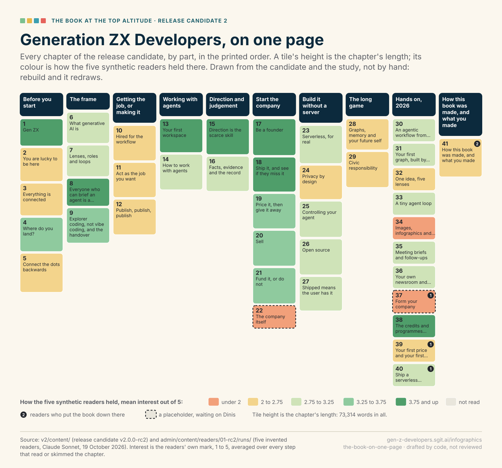

infographic · book · bookmap · drafted
Generation ZX Developers, on one page
For the whole book · proposal the-book-on-one-page in the plan

The SVG The data Review it in the plan

What it is for
Readers navigate this book by jumping from the contents page; this is the contents page as a picture, and the editor's view of where the book is slow, at the altitude the brief asked for first: the whole book on one page.
How it is made
Drawn by admin/build/infographic_svg.py from admin/content/infographics/drawn/the-book-on-one-page.json, as a bookmap. It is computed: the build fills it from the release candidate and the readers' study on every run, so it cannot fall out of date. Change the data and rebuild; the picture follows. It keeps the book's colours in every theme of this site, because it is a printed picture: the same file goes into the PDF.
Notes
Computed, not authored: it redraws on every build from the candidate and the study, so it is never out of date. For print, a version coloured by part rather than by the study (the study is the editor's tool, not the reader's).
Checked against the source
Nothing on this drawing quotes the text; its numbers and labels come from the data named under it.